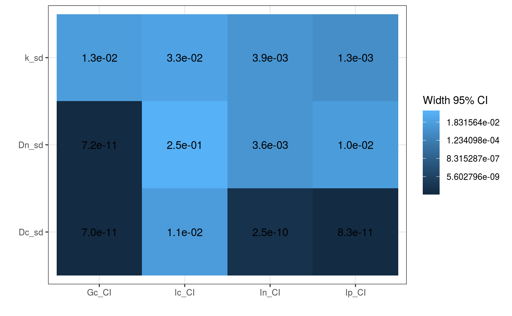

sensitivity.RdThis function runs the cnp_model fixing all parameters SD's but one to test for sensitivity
sensitivity( TL, param, iter = 1000, par, out = c("Ic", "In", "Ip", "Gc", "Gn", "Gp", "Fc", "Fn", "Fp", "Wc", "Wn", "Wp"), ... )
| TL | total length of a fish in cm |
|---|---|
| param | list of all parameter means ("_m") and standard deviations ("_sd") Default parameters are set with very low sd's. See cnp_model_mcmc for a list of all requested parameters |
| iter | A positive integer specifying the number of iterations. The default is 1000 |
| par | Charachter vector specifying which input parameter sd's should be used for sensitivity. |
| out | Charachter vector specifying which output parameter sd's should be returned. |
| ... | Other arguments that can be used from cnp_model_mcmc |
Returns a dataframe with sd's of model predictions. Row names indicate the variable, who's sd was used for the model run. Plots a heatplot with sd values for predictions.
fishflux::sensitivity(TL = 10, param = list(k_sd = 0.2, Dn_sd = 0.2, Dc_sd = 0.1), par = c("k_sd","Dn_sd","Dc_sd"), out = c("Ic", "In", "Ip", "Gc"))#> Ic_CI In_CI Ip_CI Gc_CI #> k_sd 0.03282605 3.939126e-03 1.313042e-03 1.260520e-02 #> Dn_sd 0.25480153 3.604669e-03 1.019206e-02 7.177321e-11 #> Dc_sd 0.01121197 2.500406e-10 8.279711e-11 6.994449e-11